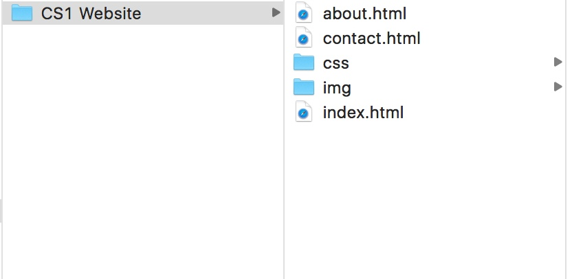

We will look at what you need to start up a web page.
And what is the proper way to set up your files.
The Start
So, are you looking to start a website? There are many things to do to start a website. The first would be to get a IDE. This is just a script editor. Some great ones are Sublime Text, Brackets, and Atom. I personaly use Atom because it was built for Github and it's easy to see what was changed and whatnot. I know many people who use Sublime Text because there's a lot of add-ons you can get that help your web coding workflow to be extremly easy. There are some other ones that are good too. Whatever works for you.
The next step would be to have a browser (obviously). If you're trying to make a professional website, you would want it to look the same (or at least good) in all browsers. You dont't have to but you might want to download all of the most popular browsers. This is important because every browser reads a page diffrently. For example, when Safari is trying to load a high resoultion image, it doesn't show the image until the entire image loaded. But in Firefox, it loads it from top to bottom. So if it takes a long time to load, it will show the top and work it's way down. It may look bad if it's showing only part of the image. Now you totally don't have to get all of the browsers. The best one for websites would propley be Google Chrome. This one is great because it has live editing so when you're updating your code it automaticly updates in the browser.
The Framwork
Let's go over the correct layout and stucture of your page. First off, it's extremly important to have the right folder system. For each website you make, you need to put it into it's own folder. Inside the website folder, you need a css and images folder. You can call the images folder pic or img. The shorter the name, the better. Example:

You see how we have the basic pages, then the two folders? This is the proper and most widly used way to make the folder system fro your web site. Do you wonder why there's a file named index.html? It seems pretty generic right? How do we know what it is? Well this is the home page. In every browser it automaticly searchs for a file named index.html. And that is the first page that loads when someone sees your site. So make sure your homepage is named index.html. All of the rest of the pages can be named whatever you want.
Are you hooked yet? See part 3 and I know you will love it!
Difficulty: Beginner
January 28th, 2017
Author: Brett Miller